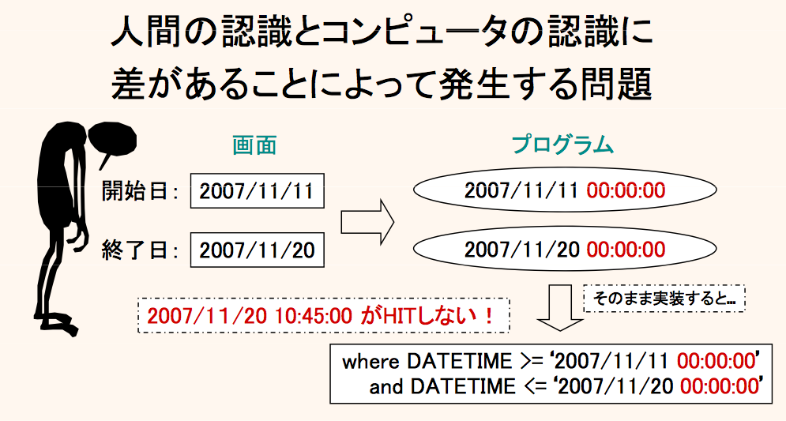

日付範囲の条件指定を定型化(安全に)
日付範囲の条件の定番
よくある失敗
ここでいう日付範囲の条件指定とは、例えば、"10月下旬(2010/10/20から10月一杯)の購入一覧を検索" というような業務があった場合、ユーザの入力値は以下のような形が想定されます。
- 購入日時開始(from)
- 2010/10/20
- 購入日時終了(to)
- 2010/10/31
実際には、色々なユーザインターフェースが存在し、手入力もあれば、カレンダーオブジェクトで選ばせたりと様々ですが、着目して頂きたいのは "購入日時終了(to)" の値、10月一杯と言った場合の "何日まで" を人が入力すると、大抵はハロウィンの日が指定されると考えられます。
これをそのまま単純に処理してSQLに置き換えた、よくあるバグは以下の通りです。
e.g. 人が入力した値でそのまま FromTo の処理をするとちょっとやばいことが... {PURCHASE} @Java
where PURCHASE_DATETIME >= '2010-10-20 00:00:00.000'
and PURCHASE_DATETIME <= '2010-10-31 00:00:00.000'
このSQLは、致命的なミスがあります。31日になった瞬間のデータはヒットしますが、31日になってから 1 秒(もしくは 1 ミリ秒)でも経過したデータはヒットしません。
- 2010/10/31 00:00:00
- ヒットする
- 2010/10/31 12:34:56
- ヒットしない
2010-10-31 をプログラム上でそのまま Date 型にパースすると、"2010/10/31 00:00:00" になってしまうからです。人が思っている "31日まで" の "まで" がプログラム上で表現されていないからです。
時分秒を指定できるユーザインターフェースだとしても、時分秒を省略した場合においては、人は "指定された日付まで" と解釈するのが自然と考えられます。かといって、データと入力条件の精度を同一にして時分秒を必須にさせるユーザインターフェースは、現実的ではありません。 (保持データの日付精度と検索条件の日付精度は別物です。 また、時分秒が業務的にあまり重要でなくても、いざというときのトレーサビリティのために時分秒をデータに保持しておくこともあるでしょう)
この問題のややこしいのは、大抵のデータはうまくヒットするため(2010/10/31 00:00:00もヒットするし)、 テストで極大値・極小値がしっかり検証されていない場合に発覚時期が遅れるということです。 リリース後にユーザからの通知で判明するという最悪なシナリオは考えたくないものです。 小さな修正ですが、こういうのは一つのアプリで何箇所も存在する可能性があります。 別のところもチェックしてみると全く同じバグが潜んでいて、小さいとは言えリリース後の修正なので、 ある程度の規模のテストをし直してから再リリース...いや、考えたくないものです。
図 : 日付範囲検索のよくある図 
{kind=link}
プログラムでの制御方法
では、プログラム側でしっかり制御をすれば良いという話なのですが、大きくやり方が二つあります。
- A. "まで" の日付を一日進めて(時分秒切り捨てて) LessThan
- 10/31 を 11/01 にして DATETIME < '2010-11-01' に
- B. "まで" の日付の時分秒を埋めて LessEqual
- 10/31 を 10/31 23:59:59.999 にして DATETIME <= '2010-10-31 23:59:59.999' に
"B" は、ミリ秒付きの日付型を使っている場合に限りますが、うまく動作するかどうかは DBMS のミリ秒の精度に依存します。そのような細かいことを意識するよりも、"A" の方が単純で不安がありません。
ただ、ディベロッパーに何も言わないと、この二つのやり方がバラバラに点在してしまう可能性があります。 それでもちゃんと動くなら良いですが、アプリ実装の管理上は良いことではありません。
また、"A" にしても "B" にしても、日付操作が必要になります。言語によりますが、特に Java の日付操作APIは少々煩雑で間違いやすいものです。"A" で統一するように通知しても、プログラム上の日付操作でバグが出るようであれば落ち着きません。 やはり最終的には、そういった日付操作を考慮した FromTo のユーティリティを作って提供するのが一番という話になるでしょう。 (それが既にあるのであれば特に問題はないでしょう)
FromTo の compareAsDate()
DBFluteでは、ConditionBean において日付範囲の条件指定を定番化する FromTo という絞り込み条件のメソッドを用意しています。オプションで compareAsDate() を指定すると、先の A の制御を想定した日付(yyyy/MM/dd)だけを考慮した範囲条件になります。
実際にはたいした処理をしているわけではありませんが、たいした処理でないからこそアプリでの標準化が置き去りにされてしまうものです。 このような定番業務に対して、明示的な概念(名前)、そして明示的な機能を提供することで、少しでも着目されて細かいバグが減っていけばと考えます。
外だしSQLでは
外だしSQLでも、ParameterBean にて DateFromTo を利用できます。